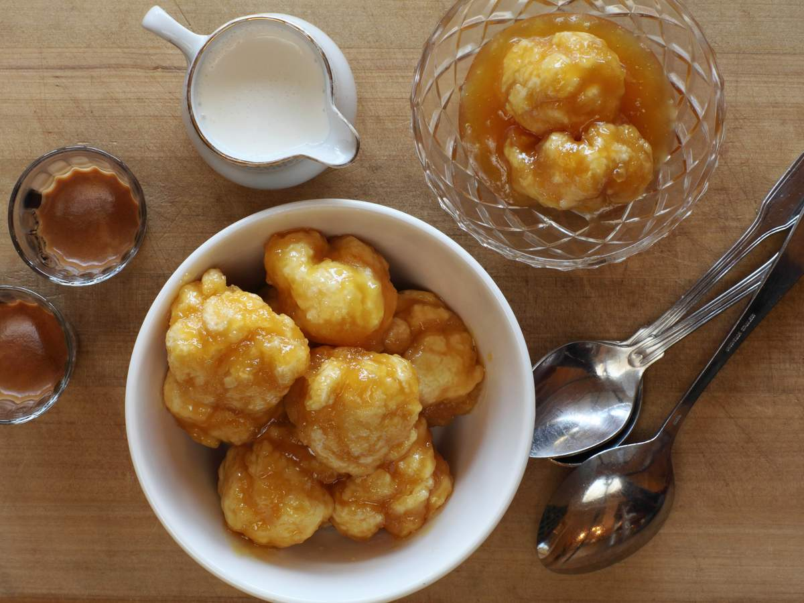

Golden Syrup Dumplings

A sweet dumpling that is yummy for your tummy
I have chosen this recipe for my website as it was made for me recently and it is very simple to make.
Ingredients
Dumplings
- 1¼ Cups self raising flour
- 30g soft butter
- ⅓ Cup Golden Syrup
Sauce
- 30g butter
- 175g brown sugar
- ½ Cup Golden Syrup
- 1½ Cups water
Method
- Make the sauce by placing all ingredients into a large non-stick frypan or saute pan.
- Stir over a low heat until the brown sugar has dissolved. Then increase the heat until the mixture boils and turn the heat down to a simmer for one minute.
- Make the dumplings by rubbing the butter into the flour until it resembles breadcrumbs. Add the Chelsea Golden Syrup and milk and stir until just combined.
- Carefully drop spoonfuls of the dumpling batter into the simmering sauce leaving space for them to expand.
- Cover and cook for approx 20 minutes or until the dumplings are puffed and golden. You will need to turn the dumplings halfway through cooking.Serve with ice-cream, vanilla custard or thickened cream.